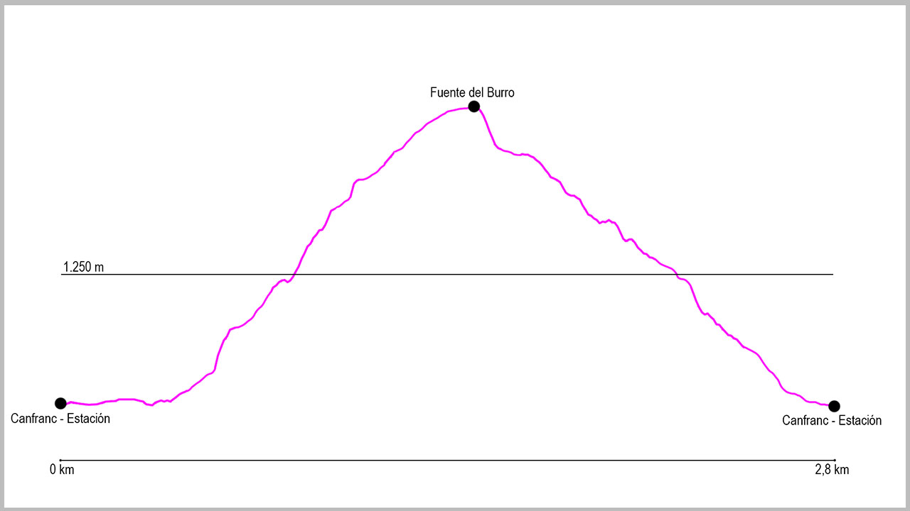

Desde el puente de la Estación de Canfranc, cogeremos la calle principal en dirección norte. Al llegar al final del pueblo tomaremos la última calle a nuestra izquierda, llamada Paseo de Los Ayerbe. Nada más comenzar subiremos una fuerte cuesta y tras girar a nuestra izquierda encontraremos un cartel sobre un muro a nuestra derecha, que marca el inicio del camino. Este sendero nos conducirá por una cómoda subida hasta el camino principal de Estiviellas. Una vez llegados a este cruce, tomaremos la bifurcación a nuestra izquierda, y tras descender unos 50 metros nos encontraremos con la Fuente del Burro. Nuestro trayecto no acaba aquí. Desde este punto comenzará nuestra bajada. Al poco de empezar encontraremos a nuestra derecha un desvío que obviaremos para continuar el descenso hacia el pueblo.
Justo antes de llegar al núcleo urbano llegaremos a las piscinas municipales, donde ya cogeremos asfalto. Seguiremos en sentido descendente para en unos 50 metros girar a nuestra izquierda. Poco después, volveremos a girar, pero esta vez a nuestra derecha, donde ya cogeremos el último tramo que nos conducirá al punto de partida de nuestra ruta.
